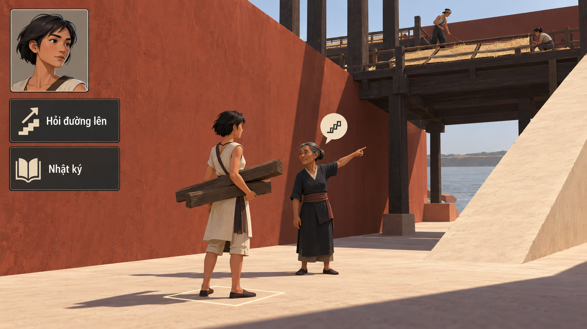

Mười ảnh thử cách dựng thế giới, dáng người và giao diện: ba nhánh từ các hướng 14/1–3 được thích, cùng bảy cách nhìn mới hoặc phát triển từ thư viện cũ.
Đất dựng thành, Ô đất sống và Làng vòng cung vẫn là ưu tiên nghiên cứu theo phản hồi của chủ dự án. Vòng mới bổ sung phương án để xem hoặc kết hợp, không thay các bản cũ hay chốt mỹ thuật cuối.
Ảnh xem trước · Giữ mọi phiên bản tham khảo · Pending user approval
KHỐI THÀNH / TẦM NGƯỜI
Hành lang thành đất

Thử giữ quy mô thành đất bằng ít khối lớn, kéo người và việc đang làm về gần để cuộc gặp không bị kiến trúc lấn át.
Ảnh đề xuất diện mạo game; cảnh và UI trong artwork là raster minh họa. Các nút trên trang chỉ phục vụ xem ảnh.
Chưa tải được ảnh. Kiểm tra thư mục assets của thử nghiệm 17.
Đang xem Hành lang thành đất.
Đổi mẫu 01–09 bằng phím 1–9; phím 0 chọn mẫu 10. Có thể dùng các nút trên, mở toàn khung hoặc PNG gốc. Cỡ chữ trang xem chỉ đổi chữ HTML, không làm chữ trong ảnh reflow.
KHÔNG GIAN / HÌNH NGƯỜI / VẬT DỤNG / UI
Mười cách thử, một cuộc đời để nhập vai.
Học từ các bản trước để thử rõ hơn về camera, silhouette, vùng đi lại và người đang nói. Một số chất liệu hoặc phương pháp đã có tiền lệ; điều cần xem là quy tắc hình ảnh mới có thật sự xuất hiện trong output hay không.
01–03 · Nhánh từ ba hướng 14 được ưu tiên04–10 · Hướng khác hoặc nhánh cải tiến
Mô tả bên dưới là ý định và câu hỏi thử; tên hướng không chứng minh đầu ra đã đạt. Nhiều yếu tố cùng thay đổi, nên phản hồi ban đầu đánh giá từng tổ hợp. Một frame chưa xác nhận toàn bộ cast, UI, chuyển động hoặc toàn game.
01 · KHỐI THÀNH / TẦM NGƯỜI
Hành lang thành đất
Thử giữ quy mô thành đất bằng ít khối lớn, kéo người và việc đang làm về gần để cuộc gặp không bị kiến trúc lấn át.
Nhánh từ14/1 · Đất dựng thành
Câu hỏi thử: Quy mô có còn được cảm nhận qua khối và khoảng trống khi texture được giảm, đồng thời người, tay và lối tiếp cận có rõ?
Quan sát ảnh này: Tường đất và ramp lớn đưa người về cự ly gần; marker, portrait tóc ngắn và NPC chỉ đường cùng đọc được. Da, vải, gỗ và nền còn nhiều texture/độ tả thực hơn brief giản lược.
02 · MẶT BẰNG 90° / ĐẤT VÀ NƯỚC
Bờ liền nét
Thử mặt bằng phẳng bằng bờ liền và khoảng âm của sông, để người, thuyền và vật mang cùng được nhìn từ trên.
Nhánh từ14/2 · Ô đất sống
Câu hỏi thử: Cả cảnh và thân người có cùng phép nhìn, hay người chính diện lại được dán lên bản đồ? Hình mảng không tự là luật ô di chuyển.
Quan sát ảnh này: Đất–nước gần mặt bằng, người nhìn từ trên và dấu chọn khớp portrait tóc xám. Cảnh vẫn có mạn thuyền, cột, bóng và cây nhiều nét; chưa phải hình phẳng liên tục90° hoàn toàn.
03 · CAMERA CUNG / CUỘC GẶP GẦN
Vành sân
Thử trục mái, cột và đường theo cung nhìn thấy được, trong khi hai người gần giữ cử chỉ và điểm đặt chân rõ.
Nhánh từ14/3 · Làng vòng cung
Câu hỏi thử: Độ cong có thuộc cả tổ chức cảnh thay vì chỉ đường xa? Đây là quy ước cách vẽ, chưa là thế giới hình cầu hoặc camera động.
Quan sát ảnh này: Biến thể trưng bày giảm mạnh texture; cột/nhà ở rìa nghiêng cùng bố cục, hai thân người giữ đứng và UI theo cung. Chưa chứng minh một phép cong thống nhất; NPC thiếu nét mặt, vật mang gần bát hơn giỏ và marker ôm cả thân.
Thử người, vật và công trình như các khối nổi nông nhìn gần chính diện, với cạnh và khe tạo độ sâu; UI cùng quy tắc lồi–lõm.
Đối chiếu bích họa12 · Thử bề dày hình
Câu hỏi thử: Cạnh dày có thật sự tổ chức cơ thể, cảnh và UI, hay chỉ là một tranh phủ texture vật liệu? Không nhận là phục dựng một hiện vật.
Quan sát ảnh này: Người và vài mép vật/UI có cạnh dày, bóng và khe rõ. Cảnh vẫn có chiều sâu phối cảnh/vật tròn/texture dày, chưa toàn bộ là một mặt relief nông chung.
05 · 2D MẢNG / SILHOUETTE BẤT ĐỐI XỨNG
Người bằng cử chỉ
Thử vai, tay và lưng phóng đại theo việc mang, vá hoặc dệt; thế giới và UI nối cùng nhịp hình thay một bộ avatar cùng khuôn.
Đào sâu hoạt hình mảng12 · Cử chỉ và tuổi
Câu hỏi thử: Khi thu nhỏ có còn nhận được tuổi, sức nặng, người trao và người nhận? Không suy staging một ảnh thành animation đã chạy.
Quan sát ảnh này: Vai, tay, lưng và giỏ tạo silhouette rõ; cảnh, portrait và UI cùng mảng lớn. Có chuyển sắc/khối nhẹ, chân dung gần vô diện nên tuổi/biểu cảm chưa kiểm đầy đủ; icon đồ mang theo là một vật cụ thể.
06 · TẦM NGƯỜI / BA KHUNG CHE KHUẤT
Cửa trong cửa
Thử ba khung mái và cột giảm kích thước, che nhau rõ để đưa mắt tới một cuộc gặp ở gần; UI neo vào vùng âm bên rìa.
Hướng bố cục · Khung kiến trúc lồng
Câu hỏi thử: Ba khoảng mở có làm sâu một nơi liên tục hay chỉ là viền trang trí? Không phải portal, di chuyển tức thời hoặc góc nhìn biết bí mật.
Quan sát ảnh này: Khung cột gần che rìa, nhiều lớp cửa mở dẫn qua cuộc gặp ra sông; portrait tóc xám khớp người được chọn. Cảnh/người vẫn có texture và phối cảnh gần minh họa, chưa xác nhận đủ ba khung hình học hoặc navigation.
07 · ÍT NÊM LỚN / THỂ TÍCH GHÉP
Khối ghép đời thường
Thử cả thân người, nhà, thuyền và icon bằng rất ít nêm hoặc lăng trụ lớn, giữ bàn tay và dáng làm việc giữa sự cô đọng.
Đối chiếu gấp16 và voxel16 · Không cùng lưới
Câu hỏi thử: Người và vật có thật sự đổi cấu trúc, hay chỉ mang shader low-poly? Hình ghép không tự là puzzle, xây block hoặc model đã dựng.
Quan sát ảnh này: Nêm/thân dài–thấp rộng và mặt góc cạnh khác nhau rõ, UI cũng thành khối nêm. Nhà, giỏ và nền còn chi tiết hơn quy tắc rất ít lăng trụ; không tangram/voxel engine thật.
08 · GÓC THẤP / THUYỀN VÀ THÂN NGƯỜI
Sát mặt nước
Thử nhìn sát mặt nước qua mép thuyền vào việc trao, kéo hoặc chuyển vật; cơ thể và vật hữu dụng dẫn bố cục thay toàn cảnh làng.
Hướng camera · Đối chiếu phản chiếu15
Câu hỏi thử: Góc thấp có giữ được người, vật và hướng tiếp cận mà không thành ảnh điện ảnh? Không nhìn dưới nước, remote view hoặc phép gương.
Quan sát ảnh này: Mạn thuyền cắt tiền cảnh, người trong thuyền và người ở bến có mặt tựa khác, portrait/marker cùng người mang bình. Camera vẫn thấy rõ sàn từ trên và còn nhiều phản chiếu/vật liệu, chưa thật sát cao độ nước.
09 · PIXEL 2D / NGƯỜI Ở CỰ LY GẦN
Pixel cự ly gần
Thử đưa pixel tới gần nhân vật và cử chỉ, giảm mật độ cảnh để fullbody, portrait và biểu tượng dùng cùng nhịp raster có chủ ý.
Đào sâu pixel11 · Khác thể tích voxel16
Câu hỏi thử: Cử chỉ, tuổi và chữ có đọc được ở cự ly dự kiến? Đây là ảnh mô phỏng phong cách, chưa là sprite sheet hoặc lưới pixel production.
Quan sát ảnh này: Nhân vật và cuộc gặp lớn hơn trong frame, có diện mạo pixel và khung UI cùng họ. Cụm chi tiết/đồ vẫn dày, tuổi trên portrait tóc xám chưa rõ như brief; chưa kiểm grid pixel/animation/asset ready.
10 · KHOẢNG TRỐNG / HÌNH VÀ NỀN
Âm bản sống
Thử dùng khoảng trống và đường biên chung để dựng người, đồ và nơi chốn; mặt đặc của UI nối với nhịp hình–nền của cảnh.
Hướng tổ chức hình · Không chỉ đổi palette
Câu hỏi thử: Người, tay, vật và lối đi có còn tách được khi hình dùng biên chung? Không coi vùng âm là tường trong suốt hoặc dữ liệu chưa biết.
Quan sát ảnh này: Những khoang lớn có bề dày và UI nằm trong hốc tạo nhịp nhìn khác; người là hình đặc. Bên trong vẫn là bến nhiều đồ/nhà tả chi tiết, chưa chỉ hai mặt/ít silhouette; kiến trúc âm bản là hư cấu mỹ thuật.
Thư viện tham khảo — mọi phiên bản được giữ lại
Mẫu mới không tự loại bản cũ. Có thể xem lại, so sánh hoặc kết hợp khi chủ dự án quyết định; lời khen hoặc yêu cầu thử tiếp không là final approval.